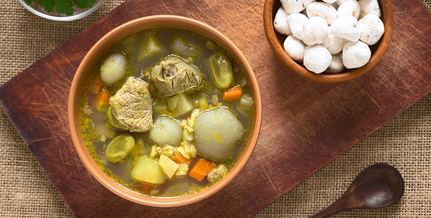

CHIRI UCHU
El plato típico bandera de Cusco.
Saber más

TRUCHA FRITA
La tradicional de los ambientes campestres.
Saber más

CHAIRO
¿Con frío en Cusco? Un chairo para calentar
Saber más

SOPA DE QUINUA
Un plato típico “ligth” para la altura.
Saber más

KAPCHI DE SETAS
El piqueo típico de las quintas de Cusco
Saber más

CHICHARRÓN CUSQUEÑO
El representante bandera del pueblo de Saya en Cusco.
Saber más

CHOCLO CON QUESO
Un tentempié tradicional de las esquinas Cusqueñas.
Saber más

LECHÓN AL HORNO
El infaltable de las típicas fiestas patronales.
Saber más

ZARZA DE PATITAS
El clásico acompañante de la sazón cusqueña.
Saber más